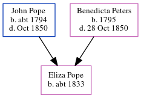

Elizabeth Howard (née Pope) 1836 -
[ Home ] | [ Calendar ] | [ Surnames Index ] | [ Errors ] | [ Family History ]A lodging house keeper and the child of John Pope (a builder) and Benedicta Peters, Elizabeth Pope, the first cousin four-times-removed on the father's side of Nigel Horne, was born in Folkestone, Kent, England on 13 Jul 18361,2,3 and baptised there at Zion Chapel, Fenchurch Street on 9 Oct 1836. She was orphaned in 1850 by the death of both parents in that year her.
She married John Howard in Canterbury, Kent, England on 18 Nov 19004During her life, she was living at Fancy Street in Folkestone on 6 Jun 18411; on Mill Lane, Stelling Minnis, Kent on 30 Mar 18512; at Southborough Villa in Folkestone on 2 Apr 18716; at 11 Marine Crescent in Folkestone on 3 Apr 18815; and at East Cliff Gardens in Folkestone on 31 Mar 19017.
Parents
- John Isaac was born c. 1794
- Benedicta was born in 1795
Citations
- 1841 England, Wales & Scotland Census - Findmypast (was age 5 and the daughter of the head of the household)
- 1851 England, Wales & Scotland Census - Findmypast (was age 14 and the sister of the head of the household)
- England & Wales Non-Conformist Births And Baptisms - Findmypast
- England & Wales Marriages 1837-2005 - Findmypast
- 1881 England, Wales & Scotland Census - Findmypast (was age 43 and the head of the household)
- 1871 England, Wales & Scotland Census - Findmypast (was age 33 and the head of the household)
- 1901 England, Wales & Scotland Census - Findmypast (was age 64 and the wife of the head of the household)
Media
Folkestone, Hythe, Sandgate & Cheriton Herald November 17, 1900

England Births & Baptisms 1538-1975 - R_949972721
England & Wales Non-conformist births and baptisms - TNA/RG4/BAP/439868
1851 England, Wales & Scotland Census - GBC/1851/0005967928
1881 England, Wales & Scotland Census - GBC/1881/0004939463
1871 England, Wales & Scotland Census - GBC/1871/0014385646
England & Wales marriages 1837-2005 - BMD/M/1900/4/AZ/000307/314
1901 England, Wales & Scotland Census - GBC/1901/0005548137
Family Tree
Map
Generated by ged2site. Last updated on Jul 3, 2024
Known Issues
30 Mar 1851: Not living with either parent in childhood when aged 14
Census information missing between Census UK 1851 and Census UK 1871
Census information missing between Census UK 1881 and Census UK 1901